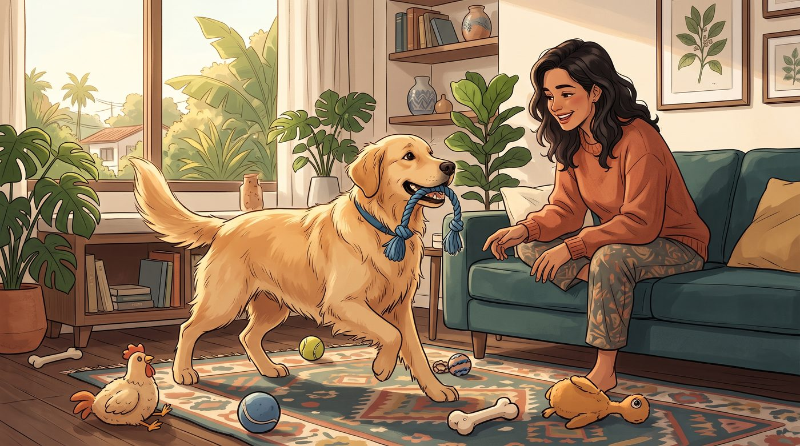
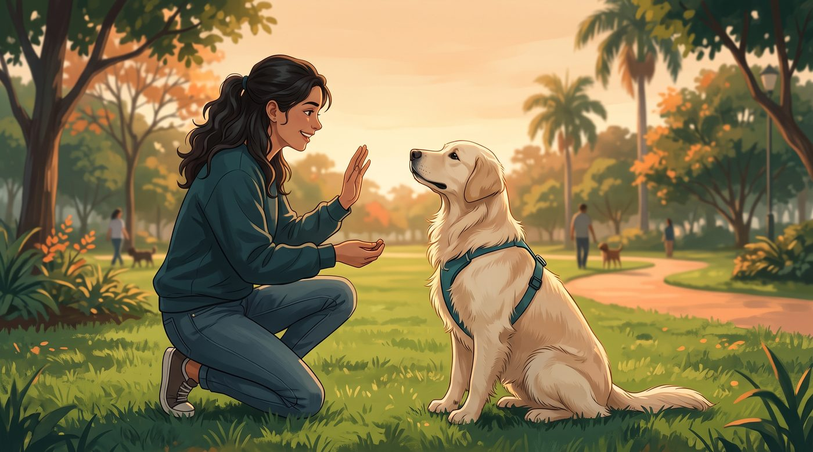
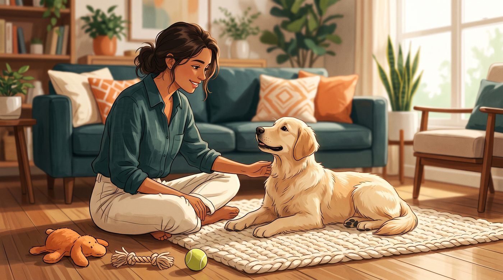
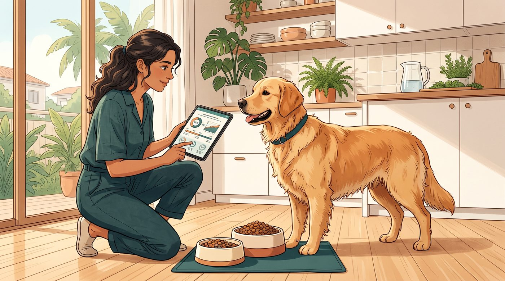
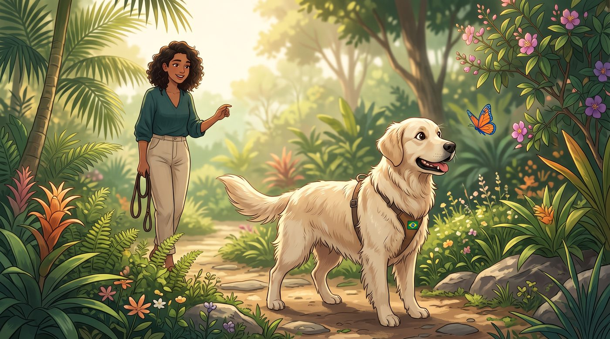
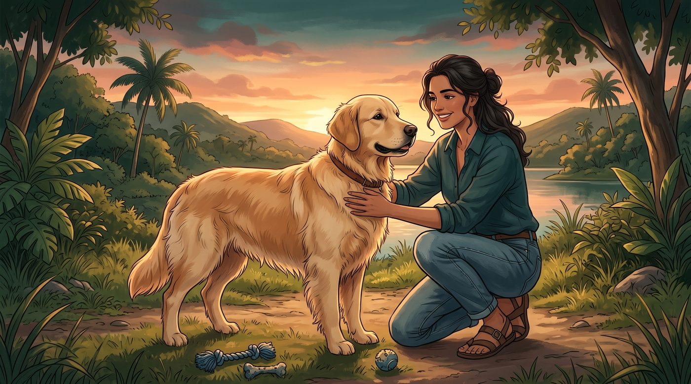

Você olha para aquele cachorro que ainda corre pela casa, morde tudo o que encontra e pede carinho como se fosse um bebê… mas, de repente, percebe que ele já está enorme.
Afinal, quando um filhote deixa de ser filhote?
A resposta não depende apenas da idade. O porte, a raça, o desenvolvimento físico e até o comportamento influenciam essa transição. Um Chihuahua pode atingir o tamanho adulto muito antes de um Dogue Alemão, mas isso não significa que todos os aspectos da maturidade aconteçam ao mesmo tempo.
1. Não existe uma idade única para todos os cães
É comum ouvir que o cachorro deixa de ser filhote ao completar 1 ano. Essa referência pode funcionar para alguns cães, mas não serve para todos.
De maneira geral:
- Cães de pequeno porte: podem atingir o tamanho adulto entre 6 e 12 meses
- Cães de porte médio: costumam chegar ao tamanho adulto por volta de 12 meses
- Cães grandes: podem continuar crescendo até aproximadamente 18 meses
- Cães gigantes: em alguns casos, só completam o desenvolvimento físico entre 18 e 24 meses
Essas são estimativas. O desenvolvimento varia conforme a genética, a raça, a alimentação e as características individuais do animal.
Por isso, um cachorro de 10 meses pode já ter praticamente o corpo adulto, enquanto outro da mesma idade ainda estará em pleno crescimento.
2. O tamanho adulto não significa maturidade completa

Aqui está uma das confusões mais comuns.
Seu cachorro pode parar de crescer, mas ainda continuar agindo como um filhote. Isso acontece porque crescimento físico, maturidade sexual e maturidade comportamental são processos diferentes.
Um cão pode já ter atingido sua altura definitiva e, mesmo assim:
- Demonstrar muita energia
- Ter dificuldade para controlar impulsos
- Se distrair facilmente
- Testar limites
- Precisar de orientação constante
- Apresentar comportamentos típicos da adolescência
As diretrizes da AAHA dividem a vida dos cães em fases porque o desenvolvimento não acontece de forma abrupta. A transição entre filhote, jovem adulto e adulto é gradual e depende do porte, da saúde, do estilo de vida e das características individuais.
Em outras palavras: crescer por fora não significa estar completamente adulto por dentro.
3. A adolescência canina pode começar antes de você imaginar

Muitos tutores acreditam que o cachorro deixa de ser filhote quando completa 12 meses. Porém, a adolescência pode começar por volta dos 6 meses, embora o momento varie entre os cães.
Nessa fase, o animal começa a apresentar mudanças hormonais, maior independência e novas formas de explorar o ambiente. É justamente quando alguns comportamentos parecem "piorar" de repente.
Aquele cachorro que antes obedecia prontamente pode começar a ignorar comandos. O que dormia tranquilamente pode ficar mais agitado. E o que parecia ter aprendido a não morder objetos pode voltar a explorar a casa com a boca.
Não significa necessariamente que ele desaprendeu tudo.
Assim como acontece com adolescentes humanos, o cérebro do cão ainda está desenvolvendo habilidades relacionadas ao autocontrole, à tomada de decisões e às interações sociais. A adolescência canina geralmente pode se estender até aproximadamente 18 meses ou 2 anos, dependendo do animal.
4. O comportamento pode amadurecer muito depois do corpo

Um cachorro de 1 ano pode parecer adulto, mas ainda estar aprendendo a lidar com emoções, estímulos e situações sociais.
A maturidade comportamental costuma acontecer mais tarde do que o crescimento físico. Estudos e diretrizes veterinárias indicam que a maturidade social pode continuar se desenvolvendo até os 2 ou 3 anos, com variações importantes entre indivíduos e raças.
Isso explica por que alguns cães jovens:
- Ficam excessivamente excitados com visitas
- Reagem de forma exagerada a outros animais
- Têm dificuldade para relaxar
- Parecem esquecer comandos em ambientes movimentados
- Alternam momentos de obediência e impulsividade
Nessa fase, a paciência é essencial. O cachorro não precisa apenas de correção: ele precisa de rotina, orientação, exercício adequado e reforço positivo.
5. A alimentação também muda durante essa transição

A fase de crescimento exige nutrientes e energia específicos. Por isso, a alimentação de um filhote não deve ser alterada simplesmente porque ele completou uma determinada idade.
A troca para uma ração de adulto depende do porte, da velocidade de crescimento e das recomendações do veterinário.
Em cães pequenos, a mudança pode acontecer mais cedo. Já em cães grandes e gigantes, pode ser necessário manter uma alimentação formulada para crescimento por mais tempo, porque ossos e articulações ainda estão se desenvolvendo.
Trocar a alimentação cedo demais pode não atender às necessidades de desenvolvimento. Por outro lado, manter uma dieta muito calórica por tempo excessivo também pode favorecer ganho de peso e crescimento inadequado.
O ideal é observar:
- Peso atual
- Condição corporal
- Porte esperado
- Ritmo de crescimento
- Nível de atividade
- Orientação veterinária
Não existe uma idade universal que determine sozinha o momento correto da troca.
6. Mesmo depois de adulto, ele continuará precisando de educação

Um erro comum é imaginar que o treinamento termina quando o cachorro deixa de ser filhote.
Na verdade, a educação deve acompanhar todas as fases da vida.
Durante a adolescência e o início da vida adulta, vale continuar trabalhando:
- Comandos básicos
- Socialização segura
- Passeios
- Controle dos impulsos
- Tolerância à frustração
- Adaptação a pessoas e ambientes
- Brincadeiras adequadas
- Rotinas de descanso
A socialização também não deve ser abandonada depois dos primeiros meses. Experiências positivas e graduais ajudam o cão a desenvolver respostas mais equilibradas diante de pessoas, animais e situações novas.
Se o cachorro parece mais teimoso nessa fase, não significa que ele precise de punições mais duras. Geralmente, ele precisa de consistência e repetição.
7. Como saber se meu cachorro já deixou de ser filhote?

Em vez de olhar apenas para a idade, observe o conjunto de sinais.
Seu cachorro provavelmente está avançando para a vida adulta quando:
- O crescimento físico desacelera ou termina
- O corpo ganha proporções mais definidas
- A dentição adulta já está completa
- A energia começa a ficar mais previsível
- Ele consegue relaxar com maior facilidade
- Demonstra mais controle dos impulsos
- Sua personalidade fica mais estável
- Aprende a lidar melhor com a rotina
- Apresenta comportamentos sociais mais consistentes
Mesmo assim, não espere uma mudança repentina no dia do aniversário.
A passagem de filhote para adulto acontece aos poucos. Alguns cães ainda serão brincalhões e desajeitados por bastante tempo — e isso não é um problema. Ser adulto não significa perder a alegria de brincar.
Então, quando ele deixa de ser filhote?
A resposta mais prática é:
Cães pequenos costumam amadurecer mais cedo, enquanto cães grandes e gigantes podem levar até 18 ou 24 meses para completar o desenvolvimento físico. Porém, a maturidade emocional e social pode continuar avançando por mais tempo.
Por isso, não se preocupe apenas em descobrir se ele já é adulto. Observe se suas necessidades estão mudando.
Talvez ele precise de menos calorias, mas continue precisando de treinamento. Talvez já tenha o tamanho de um cão adulto, mas ainda necessite de ajuda para controlar a ansiedade. Talvez esteja mais independente, mas ainda dependa muito da sua rotina para se sentir seguro.
E existe algo bonito nessa fase: o cachorro começa a deixar para trás algumas características de bebê, mas revela cada vez mais a personalidade que o acompanhará pela vida.
Este conteúdo é educativo e não substitui uma avaliação veterinária. Para definir o momento adequado da troca de alimentação, castração, exercícios ou cuidados preventivos, converse com um veterinário que conheça o porte, a raça e o histórico do seu cão.
Fontes e referências
- Canine Life Stage Definitions — American Animal Hospital Association
- 2019 AAHA Canine Life Stage Guidelines — PubMed
- Feeding Growing Puppies — VCA Animal Hospitals
- Puppy Growth and Maturity — VCA Animal Hospitals
- The Teenage Years: Puppy-Proofing and Training Tips — Cornell University
- Social Behavior of Dogs — Merck Veterinary Manual
- How Old Is My Dog? — Frontiers in Veterinary Science